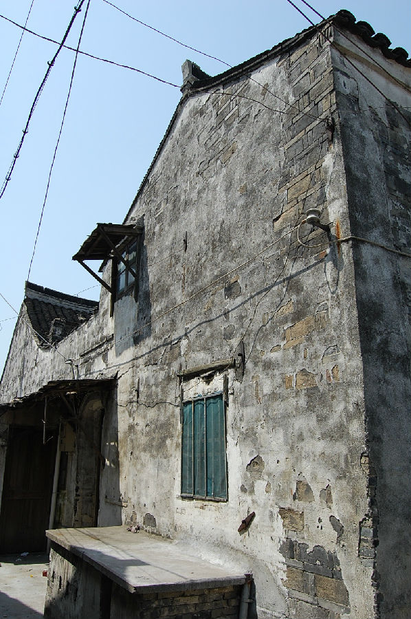

嘉兴市文物保护网 · 市级文物保护点 · 2020-11-03 · 原文

西木桥弄3号倪家民宅位于嘉兴市秀洲区油车港镇澄溪村西木桥弄3号北临市河，据形制判断为清代建造。坐南朝北，共三进，占地面积447.6平方米，砖木结构。一进改造较大，原始梁架结构不详。二进为4开间，系穿枋式五檩，朝南有廊，面阔10.24米，进深7.69米。一进、二进之间有一天井。三进为硬山顶，抬梁和穿枋式并用，共九檩，前后各四步，用四柱。东西长14.44米，南北长12米，顶高6米。南北两侧各嵌有3扇通风窗。二、三进之间有二层厢房。第一、二进均做居住使用，第三进原做粮仓，现闲置堆放杂物。西木桥弄3号倪家民宅历史较长，是倪家建筑的一部分，反映了当时油车港镇制油业兴盛的情况，有较高的科学和历史价值。2009年公布为嘉兴市文物保护点。